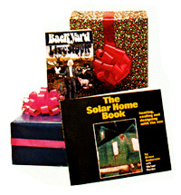

Mother's Bookshelf
By C.E. Spaulding
September/October 1977
Besides THE Mother Earth News itself, what better present for anyone's future could you give than a book for better living. And folks, this year's gift selection from MOTHER'S BOOKSHELF is really somethin' special. Every publication here has been handpicked . .. has been carefully culled from hundreds of titles so you have the "best of the best" to choose from.
For that close friend who likes to work with his head and his hands, wrap up the Encyclopedia of Furniture Making. And your favorite aunt would really enjoy thumbing through all those delicious recipes from Laurel's Kitchen. (And think of those great dinners you'll be in for!) If your mom or dad likes to garden, they'll love it even more with a copy of Organic Gardening Under Glass ... or the beautifully illustrated Health Plants of the World, with color plates so real you can almost pick the leaves.
MOTHER's made giving easy, too. Browse leisurely through this library of practical, useful books. Choose the ones you want. Then fill in the handy Holiday Gift Order Form and send it along with your check or money order. Right now's a good time. You'll have your shopping done. And we'll be able to take prompt care of your order . . . get those books back to you in plenty of time to place neatly under the tree. The prices won't bust your pocket, either. And you'll make a lot of people happy. Especially on Christmas morn. And many a morning thereafter.
A VETERINARY GUIDE FOR ANIMAL OWNERS
l At last . a truly practical, plainlanguage guide to the care and treatment of house and barnyard animals! C E. Spaulding (whom many of you will recognize as Countryside and Small Stock Journal's veterinary columnist) has compiled this handbook with the layman in mind. and has drawn upon his own 25 years of veterinary experience in order to provide really reliable, up-to-date how-to information. Everything you need to know to prevent, identify, and cure diseases and other health problems in cattle, goats, sheep, horses, pigs, poultry, rabbits, dogs, and cats is explained right here in this big (420 pages) singlesource reference book. If you own (or intend to own) livestock or pets, consider the GUIDE as much a necessity for your animals as food and shelter. Hard cover. 71037 $9.95
DESIGNING HOUSES: AN ILLUSTRATED GUIDE
by Les Walker and Jeff Milstein.
Not everyone planning to build a home (or have one built) can afford to hire an architect. In fact, many people don't want an architect to design their home, and prefer to create a more personal plan themselves. To that end. DESIGNING HOUSES explains how to analyze your to building site; choose a structural shape in keeping with your lifestyle: Integrate such considerations as ventilation, space, movement, and light; plan each room and its furnishings: evaluate heating and insulation systems: determine stress/strain factors and structural requirements: and-In general-make all the decisions which will result in a carefully and correctly conceived home. The authors stress the importance of actually seeing and feeling a design, and show you how to fabricate an exactly scaled model of your prospective abode. The latter section of the book explains the process of creating final construction plans and drawings that can be used by contractors and building inspectors. Lavishly illustrated. 153 pages. Hard cover. 64064 $10.0
ORGANIC GARDENING UNDER GLASS: FRUITS, VEGETABLES, AND ORNAMENTALS IN THE GREENHOUSE
by George (Doc) and Katy Abraham.
Like to grow your own good food? You'll find double satisfaction in raising fresh, natural fruits and vegetables year round in your own private greenhouse. Written by the authors of the celebrated Green Thumb syndicated column, ORGANIC GARDENING UNDER GLASS is your basic guide for real food self-sufficiency. Covers building simple lean-to and freestanding greenhouses plus planting, nurturing, protecting, and harvesting without chemical help. 308 pages. Hard cover. 72006$8.95
BUILD IT BETTER YOURSELF by the editors of Organic
Gardening and Farming. This whopper of a book contains 960 pages, 600 photographs, and gosh knows how many words . . all dedicated to showing you how to save time, labor. and money by building your own". Material lists, numbered step-by-step directions, carefully rendered drawings, and photos of the finished project are included here for fences, greenhouses, garden ponds plant stands, chickenhouses, cold cellars, com post bins, beehives. smokehouses, sprouters, arbors,trellises, irrigation equipment, walks, patios, lawn furniture, juice presses. and hundreds of other practical, down-home tools and structures. To say nothing of the special sections on renovating old buildings, repairing and maintaining a project once it's completed and in use, starting and stocking a workshop, and ... well, you'll just have to see this hefty encyclopedia of tools, techniques, and shop terms yourself to appreciate its tremendous value. The novice and the experienced handyman (or woman!) will both love this big, fat hand book. 960 pages, Hard cover.89006 $16.95
MODERN AND CLASSIC WOODBURNING STOVES
by Bob and Carol Ross.
An exhaustive survey of wood burning stoves and their use. Beginning with a discussion of the basic principles of combustion, the authors go on to talk about what to look for in a stove, where to buy the unit, cooking with wood, chimney design, stove installation, types of firewood, custom wood heating systems, and-finally-the impact of wood burning on the current energy situation. Four appendices (one of which lists the addresses of more than fifty manufacturers and importers) combine with a lucid writing style and numerous high-quality line drawings to make this
an exceptionally well-executed-and useful-book. 144 pages. 8-1/2" X 11" hard cover. 81032 $10.00
THE HERBALIST by Joseph E. Meyer, revised and enlarged by Clarence Meyer.
Being the ninth printing of an old favorite first issued in 1918! THE HERBALIST begins with descriptions, properties, dosage, and manner of application for the major American medicinal plants (illustrations are in gray tones, but clear and detailed). Besides considering herbs as remedies, Meyer offers directions for their use as teas, in cooking, in making wines and cordials, as perfumery and cosmetics and as natural dyes. A separate section of color plates is included at the end of the volume. Even if you never use the information practically. THE HERBALIST is full of fascinating botanical lore and is a delight to read. 304 pages. Hard cover. 68002$6.95
AWARD WINNING QUILTS, a Southern Living book
by Effie Chalmers Pforr.
The quilt block contest sponsored by Progressive Farmer (Southern Living's sister publication) brought forth thousands of entries from thirty three states . and this book is a colorful, loving tribute to the gifted winners of that contest, their quilts, their ways of life. and much, much more. Newcomers to the craft wail find clear. step- by-step, how-to photos on quilting techniques . including the simple block-by-block apartment method" that requires no frame and lets you work on one piece at a time, anywhere you might be The beauty and craftsmanship of these award winning quilts (there are 60 of them!) IS truly awesome. Each is accompanied by a full-size pattern (so anyone can duplicate the design) and a brief historical overview A lovely useful. inspiring book. 184 pages. Hard cove, 66057 $12.95
STOCKING UP: HOW TO PRESERVE THE FOODS YOU GROW, NATURALLY
by the editors of Organic Gardening and Farming.
It's here: the all-new, completely revised and expanded edition of STOCKING UPI One-third larger than the original version, the new book contains dozens more illustrations, 100 new recipes, a bigger index. and metric conversion tables, plus new sections on homemade natural ice creams, equipment for the harvest kitchen, how to can safely with lids not intended for reuse. methods of preserving fish, ways of rendering lard. and growing sprouts. The new STOCKING UP also includes expanded instructions for making jams and jellies with honey . . for drying fruits, vegetables, and meats .. and for putting up homemade pickles and relishes And all this is m addition to the tremendous collection of charts. diagrams, photos, recipes, and solid how-to information contained in the old edition of STOCKING UP! Take it from us (and from the 450,000 people who've made STOCKING UP a best-seller): No kitchen should be without a copy of this fabulously in formative (and richly entertaining) book! 532 pages. Hard cover. 73008 $11.95
THE OWNER-BUILDER'S GUIDE TO STONE MASONRY
by Ken Kern, Steve Magers, and Lou Penfield.
Ken Kern has done it again! The author of The Owner-Built Home and The Owner-Built Homestead has combined his expertise with that of two other experienced stonemasons to produce a truly remarkable book on building permanent. darn-near everlasting structures with native stone. Construction of floors, steps, arches, retaining walls, and fireplaces is also discussed. Many photos and illustrations. 192 pages Large paperback 64069$6.00
THE GUIDE TO SELF-SUFFICIENCY
by John Seymour (foreword by E.F. Schumacher).
The first truly comprehensive, lavishly illustrated (with beautiful line drawings) encyclopedia of live-better-for-less skills and knowledge, written by the co-author of the highly acclaimed Farming for Self-Sufficiency. A truly unique book. 256 pages Large (8-112" X 11 ") hard cover. 70034 $11.95
COUNTRY WOMEN: A HANDBOOK FOR THE NEW FARMER
by Jeanne Tetrault and Sherry Thomas.
An in spiring, instructive manual of basic rural skills . . . and a guide to discovering your rightful relationship to the land. 383 pages. Large paperback. 70031 $6.95
LAUREL'S KITCHEN: A HANDBOOK FOR VEGETARIAN COOKERY AND NUTRITION
by Laurel Robertson, Carol Flinders, and Bronwen Godfrey.
A celebration of life and the many delicious, nutritionally good foods that are the basis for healthy, happy living. LAUREL'S KITCHEN wasn't written-but grew-out of years of experience in the kitchen of the Blue Mountain Center of Meditation. These folks' motivation for sharing what they know about food and cooking (and giving us a glimpse at the joy in which they live) is clear. They care about us. And know that through simple changes in the way we live and eat . . a vibrant state of being which pervades the mind and emotions as well as the body" can be ours.
Originally printed and bound entirely by the community. this book is now in its third printing. Complete with original woodcuts, its 500+ pages are full of recipes uniquely arranged by mealtime, as well as type of food. Homebaked breads are the most important part of the diet . . and they are treated with loving care to help you bake the tastiest, healthiest loaves ever. Vegetables are given special attention in a separate section where selection and preparation of each vegetable is discussed, and all the recipes have the ingredients listed separately for easy mealtime planning. As complete a section on nutrition as we've ever seen gently helps you learn all you need to know to prepare nourishing vegetarian fare for your family . . . even your dog! Yes, LAUREL'S KITCHEN is a gift . . . from forty folks who care, to anyone wise enough to share the energy and knowledge within this fine cookbook. 508 pages. Hard cover. 74003 $13.95
THE FOXFIRE BOOKS.
Armed with paper, pen, and tape recorder, teacher Eliot Wigginton and a tireless high school crew took to the mountains of Southern Appalachia to preserve for all time the folklore, legends, customs. and time-tested self-sufficiency skills of the folks who live there. The result? Three hefty volumes that are at once remarkably instructive, intriguing, and downright fun to read.
BOXED SET-all three volumes in a sturdy slipcase.
Paperback. 70010 $13.95
ILLUSTRATED HOUSEBUILDING by Graham Blackburn.
Owner-builder Blackburn provides comprehensive, nontechnical instruction in the basic method of erecting a standard frame house. Specifically written for laymen, this book contains separate chapters on each major architectural feature (site and foundation, framing, siding, roofing, etc.), and more specialized information on that stage of construction. There are over 400 very detailed illustrations of building steps . . and outstanding coverage is given to working supplies and tools. Although the text is in script (and more difficult to read than type), this first-rate how-to manual is well worth careful reading. 155 pages. Paperback. 64038 $4.95
SOLAR ENERGY TECHNOLOGY AND APPLICATIONS (revised and updated edition)
by J. Richard Williams.
This is a technical book-written in a pleasantly nontechnical sort of way-designed to provide a good look at the multifaceted principles behind-and the promise of-modern solar-power technology. You won't find instructions for making a hot water heater from a blackpainted 55-gallon drum here . . . but you will find concise and comprehensive information on the technical workings of solar cells, collectors, furnaces, geosynchronous and solar-sea power plants, and lots more. This is a textbook . . . a reference book . . . and just plain fascinating reading for anyone into solar technology at a sophisticated level 184 pages. Paperback. 81008$6.95
THE COMPLETE ENCYCLOPEDIA OF NEEDLEWORK
by Therese de Dillmont.
With over a million copies in print-in five languages-the ENCYCLOPEDIA is quickly becoming the classic reference tool for both plain and fancy needlecrafts. An exhaustive storehouse of in formation, it contains precise instructions and over 1,100 illustrations for mastering macrame, crochet, needlepoint, embroidery, crewel, applique, knitting, machine and hand sewing, tapestry weaving, tatting, and more! The thorough explanations it gives of simple and sophisticated stitches, patterns, designs, fabrics, and threads appropriate to each skill will please both beginning and accomplished needlework artists. 987 pages. Paperback. 66013 $5.95
THE MUSHROOM HUNTER'S FIELD GUIDE
by Alexander H. Smith.
Although first published in 1958, this most-authoritative-of-them-all book is still the best mushroom directory available. Smith-a professor of botany and director of the University Herbarium at the University of Michigan-is one of the foremost experts on fleshy fungi, and his GUIDE provides definitive knowledge (with black-andwhite and color photographs) of 188 specific mushrooms. Both scientists and cooks will find the complete types of information they need in this book's identification, selection, and location tips. A comprehensive glossary and index add further to the enjoyment any forager can harvest from this field guide. 264 pages plus color plates. Hard cover.78008 $9.95
VILLAGE TECHNOLOGY HANDBOOK
by Volunteers In Technical Assistance.
This manual of low-technology skills and self-help projects has been distributed around the globe in several different languages, and has improved the living standards of thousands of Third World villagers. While intended primarily for use in underdeveloped nations, the VILLAGE TECHNOLOGY HANDBOOK is also an exceptionally useful tool for homesteaders and alternative communities working for selfsufficiency in this country. Within its pages are exhaustively detailed plans and instructions for building - with local materials-kilns, clay cookstoves, fireless cookers, solar water heaters, chicken brooders, earthmoving implements, sanitary latrines, water pumps, and irrigation systems. There are also extensive sections on community health, concrete and slip-form construction, bamboo building techniques, crafts (such as pottery and silk-screening), soapmaking, and digging, drilling, and reconstructing wells. 387 pages. Large paperback.86001 $9.00
RAINBOOK: RESOURCES FOR APPROPRIATE TECHNOLOGY
by the editors of Rain.
Just what the title implies. A fantastically exhaustive catalog of books, publications, centers, groups, people, and other sources of earth-oriented information, plans, brochures, instructions, etc . . - all neatly arranged by subject: Energy, Waste and Recycling, Agriculture and Food, Self-Rehence, Community. Health, Shelter, Education, Transportation, Consciousness, Visual and Performing Arts, and on and on and on. The introduction to each topic summarizes the activities of that particular field and the authors then go on to annotated lists of almost everyone and everything working on those activities. This is a super guide to the here and now of the gentler technologies that we all must switch to if the planet is to endure. A tremendous amount of overview information in very usable form. 256 pages. Paperback. 90006 $7.95
PROF. HAMMERFINGER'S INDESTRUCTIBLE TOYS
by Steve Ross.
A do-it-yourself guide to building 75 inexpensive wooden toys that are designed to take all the enthusiastic use a child can give. PROF. HAMMERFINGER'S offers a welcome alternative to plastic playthings! Each toybuilding project is diagramed and thoroughly explained and requires little more than simple materials and hand tools for its successful completion. Though one chapter is devoted to the construction of such items as rubber-band guns and bow-and-arrow sets, the bulk of this book offers ideas for such gentle toys as racers, paddle-wheel boats, trains, planes, butterfly nets, and cigar-box banjos. 309 pages. Paperback.66069$3.95
BUILD YOUR OWN GREENHOUSE
by Charles D. Neal.
One of-if not the-most comprehensive and useful do-it-yourself greenhouse manuals we've seen. The author's detailed explanations of basic techniques for selecting a site, laying a foundation, erecting a frame, and installing wiring and plumbing are so clear you might well use this volume as a primer for building any kind of structure. Explicit instructions and step-by-step photos show you how to fabricate, equip, and maintain a variety of different greenhouses . . from a simple hotbed to a large, freestanding building. Each is de signed with an eye toward absolute simplicity, economy, and efficiency. This is our bet as the book best suited to the needs of MOTHER's readers . .. unfortunately, it's also the most expensive. 129 pages. Hard cover. 72003 $9.95
WORKING WOOD: A GUIDE FOR THE COUNTRY CARPENTER
by Mike and Nancy Bubel.
This clearly written, copiously illustrated guide to the woodbutcher's s art is divided into two parts: The first section is packed with practical advice on how to find used wood, how to dismantle an existing structure safely and efficiently, the selection of tools, methods of storing wood, and techniques for moving heavy timbers. The second contains complete plans and instructions for making a tractor cart, sawhorse, hay rake, sifting screen, goat exercise platform, sheep shelter, feed bin, an equipment shed, and eight other items. No homestead should be without a copy of this useful, authoritative guide. 224 pages. Paperback. 89007 $3.95
THE GREEN WOOD HOUSE
by Larry Michael Hackenberg.
"This book," says the author, "is written for those who have already decided that they cannot afford the cost, either financially or aesthetically, of a $30,000 (plus!) suburban (crackerbox, mass-produced, ticky-tacky) house. It is a book for those who seek more." And "more"-according to Hackenberg--means a dwelling built wholly of green (fresh-from-the-tree) wood, which costs only a small fraction of what kiln-dried commercial lumber costs. With the aid of more than 60 photographs and diagrams, author Hackenberg explains in detail how to design a house, select a site, buy green wood, and use the wood to construct a beautiful, dur able residence . . . all at a cost of well under $10,000. If you enjoyed Hackenberg's article in MOTHER NO. 39 ("The Green Wood House", pages 84-86), you'll love this book.140pages.Paperback. 64071 $4.95
THE OWNER-BUILT HOME
by Ken Kern
Is a unique howto-think-it-out book as well as one of the best how to-do-it books around. Kern asserts that by following seven basic rules, the competent owner-builder can design and build a low-cost sturdy, energy-efficient house. The seven rules are, in order of importance to the owner-builder: [1) Pay as you go. [2) Supply your own labor. [3] Build according to your own best judgement. [4) Use native materials whenever possible. [5) Design and plan yourself. [6] Use minimum but quality-grade tools. [7) Assume responsibility for your building construction. Simple enough? The book is organized as follows:
Building Site and Climate-building location, building climatology, ventilation, summer cooling, light and shade, space heat, central heat, fireplace heat, landscape design.
Design and Function of a House-the plan, the freeform house, the court-garden house, group living space, individual living space, cooking and designing, inside the house.
Materials and Skills-adobe brick, pressed block, rammed earth, stone masonry, masonry block and brick, concrete, precast concrete panels, woods, wood-frame structures, pole-frame structures, composite materials, plastics, salvage materials, tools, the foundation, floors, walls, wood roofs, masonry roofs, stairs, plumbing, wiring and lighting, light and color, do-it-yourself painting. Small wonder THE OWNER-BUILT HOME is our most popular building book. If you're building a home or even thinking of building a home, GET IT! 374 pages. Paper back. 64017$6.95
THE OWNER-BUILT HOMESTEAD
by Ken Kern.
The basic homesteading primer. by the author of The Owner-Built Home . A clearly written and illustrated guide to planning for-and achieving-the self-sufficient life. 257 pages. Paperback. 70023 $6.95
THE OWNER-BUILDER AND THE CODE: POLITICS OFBUILDING YOUR HOME
by Ken Kern, Ted Kogon, and Rob Thallon. This book is an important study of the various building, sanitation, and electrical codes which severely inhibit (and often prevent) the construction of low-cost owner-designed homes. The authors begin with a look at the history and current status of such regulations, and continue on to examine the social and political implications behind those laws. Thirteen actual case histories provide an objective appraisal of the many problems faced by would-be owner-builders today, and make clear the crying need for extensive code reform. To that end, the final third of this book calls for widespread grassroots political action, and explains how citizen groups can organize and effectively work together to implement changes that will make economical self-built housing available to all who seek it. 182 pages. Paperback. 64053 $5.00
BUILDING CONSTRUCTION ILLUSTRATED
by Francis D.K. Ching.
Like most seemingly "complex' systems, a building is really little more than an assembly of simple components fit together to make a large whole. Turningthat perspective into illustrated form. Francs Ching has produced what may be the clearest, most understand able guide anywhere to the basic principles of home construction, and the options available to the builder. Chapter by chapter, Ching presents a thorough. lucid, visual portrayal of a building's primary elements (foundation, floor, walls. roof, etc.) as though they were pieces to a puzzle . . and then proceeds to explain (and, of course, illustrate) the different ways those elements can be constructed, the advantages and disadvantages of each technique. the stress/strain/materials factors to be considered, and-ultimately-how the "pieces" come together to form a lasting dwelling Virtually every one of this book's 320 oversized pages features neatly rendered, purposeful schematic drawings and handwrit ten text. If you want a real, working knowledge of how and why buildings are assembled-covering everything from site selection and special geometry to wiring and final finishing-here's where to look first. 11" X 14" paperback. 64046 $9.95
SEVEN-VOLUME SET OF THE McGUFFEY READERS plus A $3.75 BONUS BOOK. If your son or daughter isn't reading as well as you had hoped, the trouble may lie with too much of "the tube" and not enough h of "the text". For generations, THE McGUFFEY enough of "the McGUFFEY READERS--us- the phonetic and word method-have taught millions of American children to read at a high level of efficiency and to spell without difficulty. A veritable collector's item, these handsomely bound and beautifully illustrated volumes include priceless classic selections from English and American literature. Over 1,600 pages of education and entertainment to be handed down from generation to generation.
AT NO EXTRA CHARGE, you'll also receive a BIG BONUS COPY of Webster's 176-page Elementary Spelling Book, a $3.75 value alone EXAMINE THE SET FOR 10 DAYS. If not 100 % satisfied, return it and the spelling book in resalable condition and your money will be fully refunded. 61013 $25.00
ORGANIC PLANT PROTECTION edited by Roger B. Yepsen, Jr., and the editors of Organic Gardening and Farming. Insecticides, herbicides, fungicdes, bah! The truth is, anyone can nurture healthy crops of fruits and vegetables without using dangerous chemicals to "control" natural pests . . . and this book, without a doubt, is one of the best places to go to learn how. ORGANIC PLANT PROTECTION first stresses basic preventive measures any gardener can take-such as developing healthy soil, using resistant crop varieties, and practicing companion plantingto avoid insect and disease Infestations, and proceeds from there to describe the various "weapons"-traps, repellents, and biological controls-that can be safely put to work in the event that a problem does occur. Thousands of bugs and diseases-and how to prevent andlor get rid of them-are defined and described . . . and a total of 200 color photos and line drawings make it easy for the reader to identify the most common maladies that befall backyard food plants. 688 pages. Hard cover 67052$12.95
THE ENCYCLOPEDIA OF FURNITURE MAKING
by Ernest Joyce.
No matter what you want to know about the art of making fine furniture from wood, you're sure to find it right here. This is undoubtedly the most Comprehensive guide to the art we've ever seen' Everything from selecting the right tools and seasoning raw timber to actually constructing high-quality tables, chairs, bookshelves, cabinets, and a great deal more is included in this whopper of a 494-page book THE ENCYCLOPEDIA OF FURNITURE MAKING is illustrated with hundreds of useful photos and illustrations and just naturally belongs in every woodworker s shop right along with hammer and saw. Hard cover 66071 $14.95
HEALTH PLANTS OF THE WORLD: ATLAS OF MEDICINAL PLANTS
by Francesco Bianchini and Francesco Corbettawith illustrations by Marilena Pistoia.
So comprehensive is this work-of-art book that it ca, de considered the "encyclopedia" of almost every hern and plant used by herbalists and homoeopaths today. Eighty-two exquisite illustrations-so alive that yo,. can almost smell and touch them-portray these health growing plants in their fullest color and beauty 242 agesHard cover. 78002 516.95
THE ART OF BLACKSMITHING
by Alex W. Beater.
How to work iron by hand and set up your own shop The description of equipment and techniques which have evolved over six thousand years make good reading even if you don't care to be a smith. 438 pages Hare cover. 66029 $11.95
THE BOOK OF TOFU: FOOD FOR MANKIND
by William Shurtleff and Akiko Aoyagi.
Tofu is an extraordinary highprotein, low-cost food made from soybeans. It s totally cholesterol-free, low in calories and saturated fats, loaded with minerals and vitamins, tasty, and ver satile and can be bought in stores or-better yetmade at home. Although tofu has long served as a die tary staple in the East, it is virtually unheard of here in the West . . which is astonishing when you realize that America produces two-thirds of the world's soybeans! Aiming to adjust this imbalance, THE BOOK OF TOFU offers complete instructions for making tofu at home and on a community scale ... and hundreds of recipes for using grilled, broiled, deep-fried, frozen, and driedfrozen tofu in casseroles, egg dishes, sauces, salads. dips, dressings, soups, and various other dishes. There are also recipes for making maximum use of the byproducts (soymilk, okara, whey, age, and others) produced when soybeans are turned into tofu. If you're on a budget, are looking for good solid nutrition, or are a vegetarian-or anyone who eats-we highly recommend THE BOOK OF TOFU. 336 pages. Paperback.74072 $7.95
THE BOOK OF MISO
by William Shurtleff and Akiko Aoyagi.
Miso--an all-purpose, high-protein seasoning made from fermented soybean paste-is a living food containing lactobacilli and other beneficial microorganisms (plus digestion-aiding enzymes), and is one of East Asia's favorite soybean products. Unfortunately. miso is not yet widely available in the U.S., but-with the aid of this wonderfully entertaining and comprehensive handbook (written by the world-famous authors of The Book of Tofu)-you can make it yourself at home and serve it in 400 different ways. Part I of this mom. moth paperback is devoted to a discussion of soybeans and the world protein crisis, miso as a food, and the varieties of miso . . Part II lists hundreds of tastetempting miso recipes . . . and Part III focuses in on how miso is made: at home, in small shops, and on a mass scale. Eight appendices, over 300 pen-and-ink drawings, and a lively style of writing make this more than "just another cookbook"! 254 pages. Large paperback. 74084 $6.95
BOAT LIVING
by Jack Wiley.
How to select, buy, and live on a boat as an alternative to a conventional house. 136 pages. Hard cover. 82007 $8.95
THE WOODBURNERS ENCYCLOPEDIA
by Jay W. Shelton and Andrew B. Shapiro.
A large (8-314" X 12"I. thoroughly illustrated (140+ drawings, charts, and graphs) compendium of information on the cost, safety, design, and operation of wood-burning stoves and fireplaces, with an alphabetical listing of more than 160 stove, furnace, and fireplace manufacturers and dis tributors. 155 pages. Large paperback. 81028$6.95
ENCYCLOPEDIA OF ORGANIC GARDENING edited
by J.I. Rodale and staff.
Just about everything you'll eve' want to know about organic gardening condensed into one gigantic reference book. Covers vegetable and flower gardening. orchards and fruit trees, house plants landscaping, shrubs, borders, herbs, nut trees, green houses . . nearly 1,500 topics! How to plant. cultivate fertilize, harvest, identify growing things, cure plan diseases, prevent insect attacks naturally, compose mulch, build rich soil, and do many other things of major importance too rganic farmers. A section on homestead tells how to achieve independence and security on a small plot of land. Not lust a bargain but a must for the natural gardener and back-tothe-lander. 1,145 pages Over 300 illustrations.Hardcover. 67005 $14.95
1978 WRITER'S MARKET edited
by Jane Koester and Bruce Joel Hillman.
This all-new, fully updated edition of WRITER'S MARKET lists a whopping 4,454 paying markets for novels, short stories, articles, poems, plays fillers, gags, and greeting card lines . . . including more than 400 neverbefore-listed magazines and publishing houses! Many of the book's entries contain-in addition to addresses, editors' names, pay scales, and special submission requirements-a paragraph or two by the editors themselves on how to "break into" their particu lar publication(s). And-in addition to market listingsyou II find special sections on manuscript preparation copyright law, photojournalism, authors' agents, how to set; book-length manuscripts, plus an incredible amount supplementary "how to" information. Literally a supermarket of opportunities for writers! Indexed, ai- and categorized for easy reference. 1,000 paces Hard cover. 75021 $13.95
1978 ART & CRAFTS MARKET edited
by Lynne Lapin and Betsy Wones.
An astounding (and astoundingly , compilation of the names, addresses, pay syaes and needs of 4,498 ad agencies, public relations firms craft dealers, book publishers, magazines, syndicates. film producers. and other organizations that pay me money sometimes BIG money-for crafts and artworkThe all new 1978 ART & CRAFTS MARKET (which takesthe place of last year's Artist's & Photographer's Market) contains no less than 1.000 never-before-published market listings plus feature articles on how the -to's of freelancing profiles of successful artisans, pictures of homemade objets d'art" that sold to markets listed in the book. a discussion of the new copyright law, and lots lots more' A cornucopia of priceless information for the freelance artist or craftsperson. 800 pages. Hard cover 75007 $10.95
1978 PHOTOGRAPHER'S MARKET edited
by Melissa Milar and William 8rohaugh.
One picture is worth 1,000 words and (potentially) thousands of dollars, with the aid of this exciting new book from the publishers of Vi Market Inside PHOTOGRAPHER'S MARKET you rind more than 1,600 names and addresses of magazine book. calendar, and greeting card publishers. advertising and public relations agencies, audiovisual him producers. stock photo agencies, etc. (Each listing tells 'you whom to contact, what the buyer wants, how he 'wants it. and-of course-how much you'll be paid.) In addition, you'll find helpful background articles such as How to Prepare a Portfolio" by photo consultant Henrietta Brackman, "Basic Hardware for the Freelance Photographer" by Arthur Goldsmith (editorial director of Popular Photography magazine), and "Mind Your Own (Photo) Business" by Ted Schwarz (author of The Business Side of Photography). A tremendously informative land entertaining) book . . must reading for the freelance shutterbug! 400 pages. Hard cover. 75004 $9.9
FROM THE GROUND UP
by John N. Cole and Charles Wing.
Every individual should design, build, and decorate his or her own unique, highly personalized dwelling. Ridiculous? Impossible? Not so, say authors John N. Cole (editor of The Maine Times) and Charles Wing (a founder of The Shelter Institute in Bath, Maine), who've compiled an excellent layperson's guie to the engineering of a permanent, energyefficient home. Cole and Wing cover all options available to the owner bullder in the areas of site selection, foundation types, lumber choice. framing, roofing, heating. wiring, and plumbing, and bring an extraordinary number of tables, charts, and figures to bear in their presentation. (The authors put forth an especially well-documented assessment of the performance potential of passively solarheated houses.) You'll want to keep this largeformat paperback right next to Ken Kern's books on your reference shelf. 244 pages. 64067$7.95
THE SOLAR HOME BOOK
by Bruce Anderson with Michael Riordan.
A thorough introduction and guide to the residential uses of solar energy. All the residential uses: the heating and cooling of living space, the heating of household water. the generation of electricity . . . you name it and it's here. You want big projects? How about the more than 40 examples of solar-heated and cooled houses and buildings in this manual. Small projects? The book also contains cutaways and other instructions for the renovation of existing buildings, fabrication of greenhouses, even the construction and use of water heaters that almost anyone anywhere can build. Low-cost aspects of the use of the sun? That's emphasized on all the projects described in this guide. Theory? There's lots of it here . . . and all in an easy to digest presentation that's amazingly jargon-free without sacrificing content, clarity, or detail in any way. Home owners, tradespeople, and designers are all gonna love this one. This book is all you really need to design and successfully operate a solar-heated and/or -cooled dwelling anywhere on the planet's surface that such a building can be built and operated. And the more than 100 straightforward diagrams and more than 60 photographs and drawings make everything in THE SOLAR HOME BOOK a snap to understand. 297 pages. Paper back. 83001 $7.50
DESIGNING & BUILDING A SOLAR HOUSE
by Donald Watson
The author of this dandy handbook really knows his stuff. He's been a solar project consultant to the United Nations and the U.S. Department of Housing. Don Watson is also a practicing architect who has built his own solar home and designed 60 other solar-heated or-tempered dwellings. Watson's aim with this book, he says, "is to make a complex subject both interesting and easy to understand". And that he does! Active systems, passive systems, Eco Design (how to design a building for maximum energy conservation), airflow through a house, site planning, types of heat exchange systems . . . it's all here and-the way Don presents h it's all good! As a matter of fact, the resource information in the back of the book-lists of solar houses throughout the country, accompanying photographs, sources of solar heating equipment, and solar design calculations, cost comparisons, and performance data-alone is worth the price of this manual. 281 pages. Paperback. 83003 $8.95
HAND-HEWN: THE ART OF BUILDING YOUR OWN CABIN
by William C. Leitch.
This book's main purpose is simply to help the novice fully understand (and appreciate) the concepts behind log construction, the architectural options available to the builder, andfinally-the actual process of erecting such a structure. Unlike most, however, HANDHEWN doesn't purport to be the definitive work on the subject. Instead, the author honestly advises his readers to seek additional sources of information, and-in fact-reviews a number of such volumes to make the choice just that much easier. The text covers and clarifies points that previous works either skip over entirely or explain inadequately (HANDHEWN's section on notching logs is the best we've ever seen), and discusses both the aesthetics and mechanics of land buying and use, planning, living in the mountains, and employing the right tools for the right jobs. A truly remarkable photo-illustrated book, and a "must" if you're thinking about forging .a home in the wilderness. 122 pages. Paperback. 69001 $4.95
BACKYARD LIVESTOCK: HOW TO GROW MEAT FOR YOUR FAMILY
by Steven Thomas.
This tight, concise, and well-illustrated handbook contains enough information to get anyone started raising their own poultry, rabbits, sheep, goats, pigs, and veal .. . right in his or her own back yard! The care of each animal discussed is thoroughly detailed and the book contains treatments of subjects related to the small-scale production of meat animals: the tanning of hides, how to give an injection, the raising of grains for livestock feed, etc. This is certainly not an exhaustive animal husbandry guide . . . but it is an extremely handy introduction to the subject for the beginner. 264 pages. Paperback. 71019$5.95
HOW TO BUILD AND FURNISH A LOG CABIN
by W. Ben Hunt.
Mr. Hunt, a lifelong outdoorsman who would be about 90 if he were still living wrote two books on log cabin construction in 1939 and 1947. Both are reprinted in this unusual work on the building of a backwoods home (including chimney and fireplace) with hand tools only. Many excellent drawings and photographs illustrate the process step by step. The second part of the guide contains a wealth of handsome designs for rustic furniture ... also for fences, bridges, signposts, and other out door structures.166 pages. Paperback. 69009 $3.95
THE ALMANAC OF RURAL LIVING
by Harvey C. Neese.
Absolutely amazing! We can't even begin to list all the information that's packed into this incredible, almost encyclopedic guide. But just to give you an idea, here are a few sample sections: agronomy (soil chemistry,composting, irrigation, and water-supply systems); hor ticulture (raising fruits and vegetables, grafting and budding, using fertilizers and soil neutralizers); pest control (insects, the plants they favor, the substances-both natural and man-made-used to combat them); animal husbandry (cattle, goats, swine, poultry); veterinary medicine (immunology, injection procedures, livestock, feeding); home industry (foraging, tanning, food storage, weaving, making soap, candles); self-help engineering (plans and instructions for constructing outbuildings and farm and home equipment); health (basic hygiene, first aid, midwifery); and charts and tables (measurements, conversions. "farm figuring", and knot tying illustrations). A real workhorse of a book! 483 pages. Paperback. 70030 $6.95
NEW AGE VEGETARIAN COOKBOOK
by the Rosicrucian Fellowship.
The most complete vegetarian cookbook we've found. Includes food values, menu suggestions, canning, preserving, freezing, use of herbs, and lots of good, sensible recipes. 492 pages. 74057$4.50
OTHER HOMES AND GARBAGE: DESIGNS FOR SELF SUFFICIENT LIVING
by Jim Leckie, Gil Masters, Harry Whitehouse, and Lily Young.
A good many books on "self-sufficient living systems" have been published in recent years, but-for some reason-most either fail to provide enough technological know-how (the "Mickey Mouse approach) or include so much scientific jargon (the "new Einstein" complex) as to make them in comprehensible to the everyday layman. OTHER HOMES AND GARBAGE, however, hits the "alternatives" nail squarely on the head. Put together by four engineers from Stanford, the book covers alternative architecture, small-scale generation of electricity. solar heating principles, waste handling and water supply systems, and agriculture and aquaculture . . . and explains each subject in realistically technical (but entirely understandable) terms. The result is a reference work that goes well beyond the point of philosophy and theory to encompass (hurrah!) the realm of practical application. Charts. tables, facts. figures, and just darned good writing make OTHER HOMES AND GARBAGE a superb primer for the alternatives enthusiast. 302 pages. Large paperback. 70024 $9.95
THE SURVIVAL GREENHOUSE
by James B. DeKorne.
Readers of THE Mother Earth News' will recognize this author as the enterprising fellow who's built a selfcontained food production unit-an underground hydroponic greenhouse and aquaculture tank-that's powered by the wind, heated by the sun, and fed on compost. And this book is a report on Mr. DeKorne's efforts . . his successes and failures. trials and triumphs. More important, however, THE SURVIVAL GREEN HOUSE explains how you can duplicate the writer's work, and provides complete information on installing a wind generator and solar collectors, formulating organic hydroponic solutions, and-in general-managing the production of both fish and vegetables in your own back yard. Many illustrations. charts, and tables round out this definitive work. 165 pages. Paperback. 72005$7.50
 |
 |
|